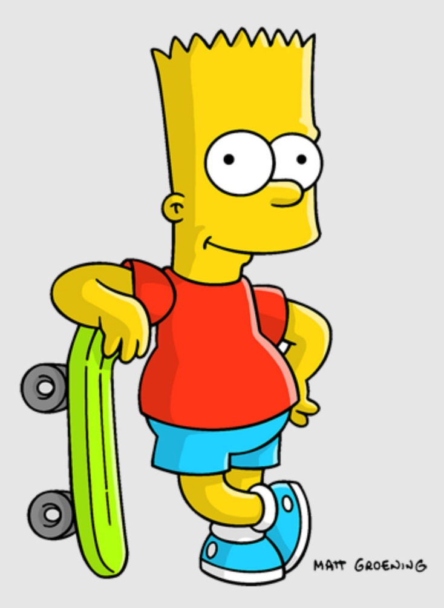
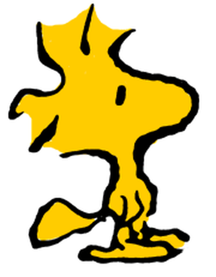

Exhibitions
Delusionville, Allouche Gallery, New York, New York, US, October 11–November 25, 2018.
Cultural & Artistic References


Notes
A collaboration between Ron English and Daniel Johnston.
Delusionville, Allouche Gallery, New York, New York, US, October 11–November 25, 2018.


A collaboration between Ron English and Daniel Johnston.